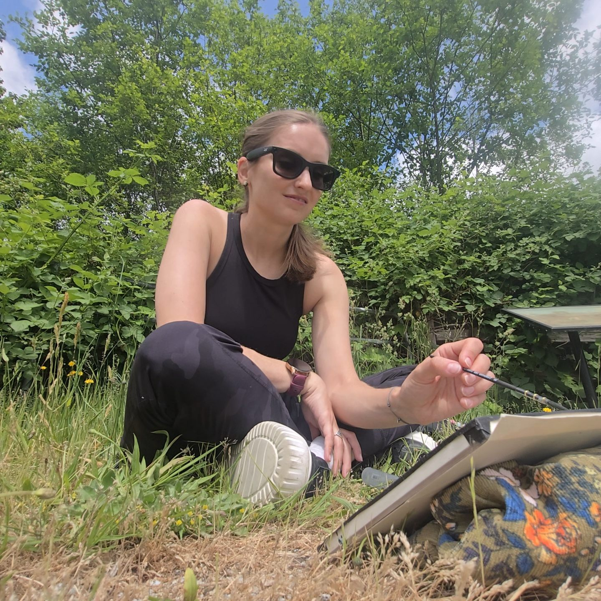

Watercolour Artist & Storyteller · Vancouver, BC
Veronika Vaness
Watercolour journeys, one brushstroke at a time
I'm a Vancouver watercolour artist painting the places that stay with us: old coastlines, working harbours, mountain light, and quiet corners of everyday life.
My work often begins outside, close to the subject, with a small set of paints and whatever the day is doing with the light. I like the way watercolour keeps a little mystery of its own: soft edges, blooms, accidents, and atmosphere.

Based in VancouverInspired by the BC coast, travel, and everyday stillness.
Painted by handOriginal watercolours on textured cotton paper.
Open to commissionsCustom pieces for homes, coastlines, and meaningful places.
A little about me
Painting the everyday and the far-away
I'm a watercolour artist based in Vancouver, drawn to heritage canneries along the coast, the working harbour, alpine light, and the small, quiet scenes that ask to be remembered.
Most pieces begin outdoors — a brush, a little water, and whatever the day is doing with the light.
Read her storyCommissions
Bring a place you love into watercolour
A childhood home, a coastline, a city you fell for — I'd love to paint the place that means something to you.